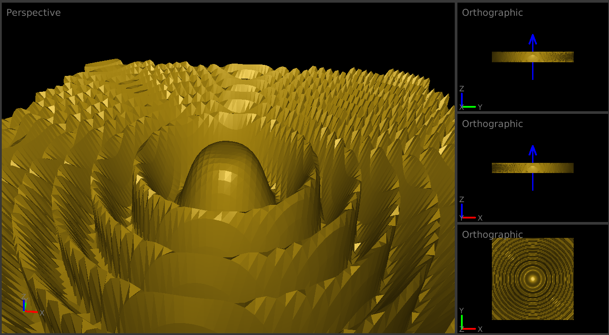

Marching Diamonds - Solve Ambiguity in Marching Cubes
Explanation
The Marching Cubes algorithm is a cornerstone in the field of computer graphics, particularly within the realm of medical imaging and 3D modeling. It operates by traversing a scalar field (or volume data) and extracting a surface (iso-surface) that represents points of a constant value, effectively converting volumetric data into a mesh of polygons (usually triangles). This method has been widely used for visualizing and analyzing 3D scalar fields, such as CT or MRI scans, enabling the creation of tangible models from abstract data.
 This is how it looks like with marching cubes.However, the Marching Cubes algorithm is not without its problems. One significant issue is its inability to handle ambiguous cases without introducing artifacts or losing important details. These ambiguities arise in situations where the algorithm's basic rule set cannot determine the correct way to connect the vertices on the cube's edges, potentially leading to holes or disjointed surfaces in the resulting mesh. Additionally, the original algorithm can produce a large number of polygons, which may not be efficient or necessary for capturing the underlying structure of the data, leading to performance and storage issues.
The Marching Diamonds algorithm emerges as an innovative improvement on the Marching Cubes technique, addressing some of its critical flaws, particularly around ambiguity and efficiency. This method introduces a more sophisticated approach to analyzing the scalar field, focusing on the formation of "diamonds" or tetrahedra instead of cubes. By doing so, it offers a more flexible and accurate way to resolve ambiguities, ensuring a smoother and more coherent surface representation. The algorithm adapts dynamically to the data, potentially reducing the number of polygons generated and improving computational efficiency without compromising the quality of the iso-surface.